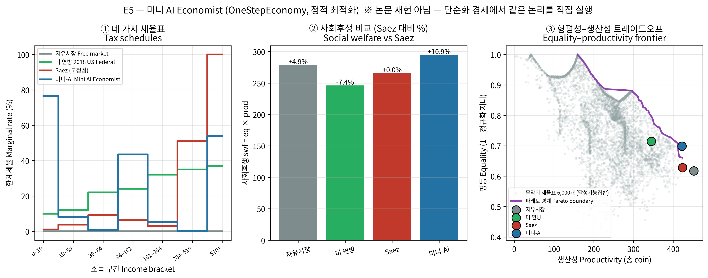
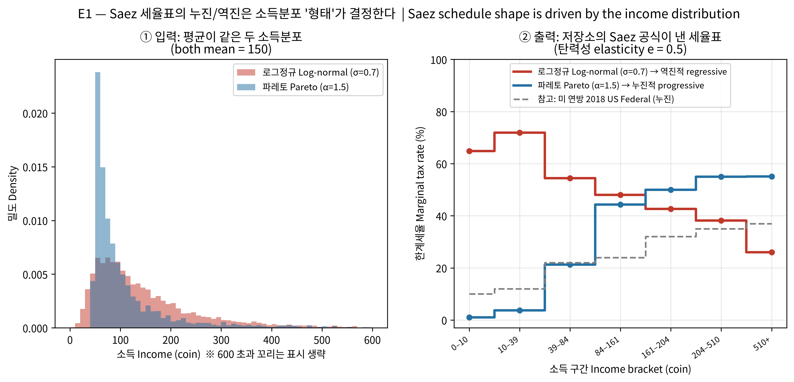
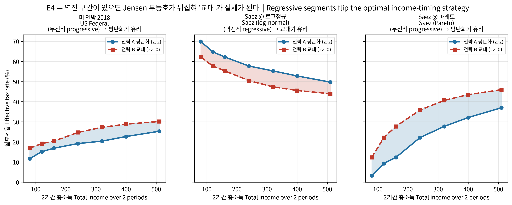
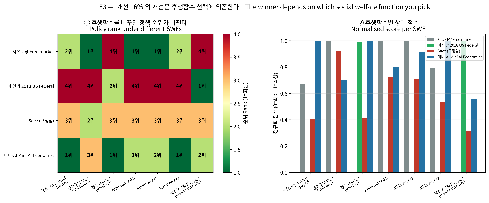
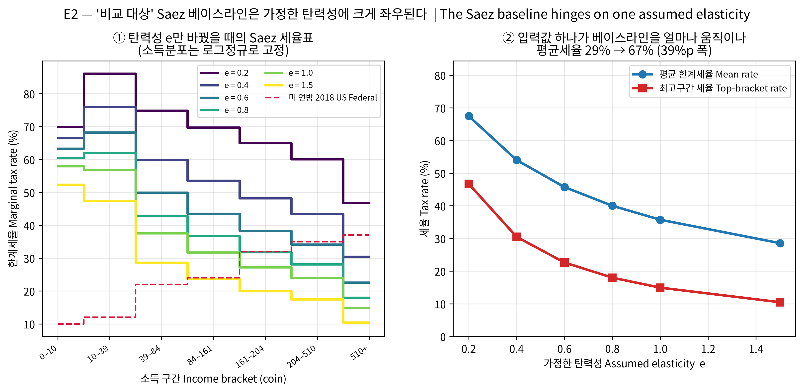

DQN (Mnih et al., 2013)
"각 행동의 가치(Q값)를 추정하고, 가장 높은 걸 고른다"
PPO (Schulman et al., 2017)
"행동을 선택하는 정책 자체를 직접 학습한다"
| 경제학 (동적 최적화) | 강화학습 (RL / MDP) |
|---|---|
| 상태변수 X_t & 선택변수 Y_t | State s_t & Action a_t |
| 상태방정식 X_{t+1} & 순편익 π_t | 전이함수 P(s'|s,a) & 보상 r_t |
| 목적함수 max Σ βᵗ π_t (할인인자 β) | 목적함수 max E[Σ γᵗ r_t] (할인율 γ) |
| 코스테이트 변수 λ_t (그림자가격) | 가치함수의 기울기 ∂V/∂s |
| 해밀토니안 H = π + λ·f(X,Y) | 벨만 방정식 Q(s,a) = r + γV(s') |
4명의 노동자 AI가 세후 효용을 극대화
사회 후생 극대화, 7개 구간 소득세율 조정
| 정책 | 평등 eq | 생산성 prod | eq×prod | Saez 대비 |
|---|---|---|---|---|
| 자유시장 | 0.617 | 451.6 | 278.8 | +4.9% |
| 미 연방 2018 | 0.714 | 344.5 | 246.1 | −7.4% |
| Saez (고정점) | 0.628 | 423.2 | 265.8 | 0.0% |
| 미니-AI | 0.699 | 421.9 | 294.8 | +10.9% |




